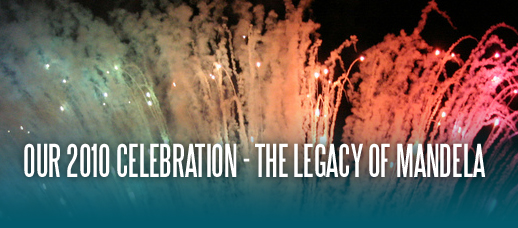
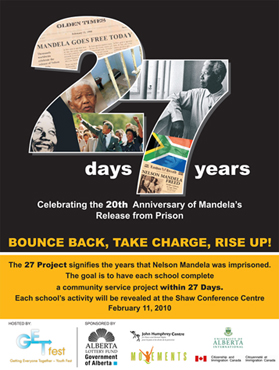

On February 11, 1990 two very important events were celebrated: The release of Nelson Mandela from prison in South Africa and the birth of Movements: The Afro-Caribbean Dance Ensemble here in Edmonton. On February 11, 2010 these two very important occasions were celebrated once again, this time to mark the 20th anniversary of the release of former President Nelson Mandela from prison and Movements’ 20th birthday. Students, teachers, federal, provincial and municipal representatives, along with other invited guests from across the city joined in this extraordinary celebration at the Shaw Conference Centre to kick off GETfest 2010.
Driven by our youth steering committee made up of leadership students from several local schools, GETfest (Getting Everyone Together Youth fest) brought students together in an inspiring, multicultural, all-morning session built on two of Mandela’s strongest characteristics: TENACITY AND RESILIENCE. The event featured two exciting keynote speakers, CFL Hall of Fame legend, Henry “Gizmo” Williams and International 4Real filmmaker, Josh Thome, as well as an audio/visual presentation through which the students discovered the significance of the life and times of Mandela and entertainment in the form of music and dance.
A major highlight of the event was one of our future bright leaders who introduced the27 PROJECT themed “Winning from the Inside; Take Charge, Bounce Back, Rise Up!” She challenged and encouraged all participating schools to accept their social responsibility by giving back to their communities, the city of Edmonton and ultimately our country.
27 PROJECT FOR SCHOOLS
 |
Objective: Create and implement a strategic plan of action to address issues of interest or concern in the community with the intent of effectively illustrating that small actions by ordinary people can make a big difference and evoke meaningful and lasting change. This interactive program focuses on student engagement whereby students will interact with their inner selves, other students, citywide, and members of their communities. Through various types of student-led service activities, they will examine their internal environments, be empowered to take responsibility for their decisions, be motivated to |
find the courage and determination to persist in the face of challenges, and keep moving forward regardless of the state of their external environments. The students will perform their service over 27 days – with each day of service representing one year Mr. Mandela spent in prison.
Participating students will document their projects and at the end of the 27 days an “electronic quilt” will be woven together from each submission. The quilt “pieces” will be composed of still photographs, written word, or a video depicting the youth and the progress through their chosen project. The quilt will be unveiled in April 2010 to correspond with International Youth Service Day and will then be presented to the Nelson Mandela Foundation in South Africa.
27 PROJECT FUNDRAISER
GETfest will be hosting a bail from jail campaign fundraiser in conjunction with the youth-led 27 Project. Edmonton’s Top 27 Influencers will recognize and raise awareness of this exciting youth project while reminding us of the legacy of iconic world leader, Mandela. These role models have been especially selected because, just as former President Nelson Mandela, they too embody and demonstrate the innate attributes of tenacity, resilience and selflessness. On March 18th, 2010, these Top 27 Influencers will be showcased and presented to the media at a cocktail reception and live/silent auction fundraiser at the Matrix Hotel in Edmonton. Enjoy a fun evening of entertainment including dancers, the Marc Beaudin Jazz Band, an array of unique live auction items while mingling with individuals who make a difference Getting Edmonton Together. To nominate someone to be an Influencer or for more information, please call us at 780-415-5211 or email getfest@shaw.ca |